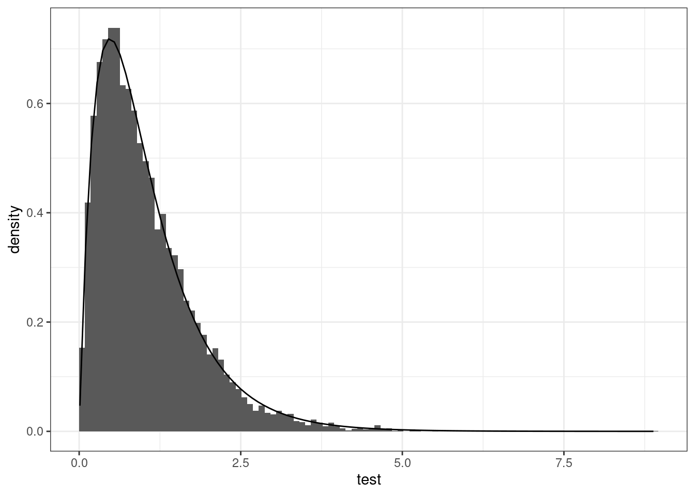
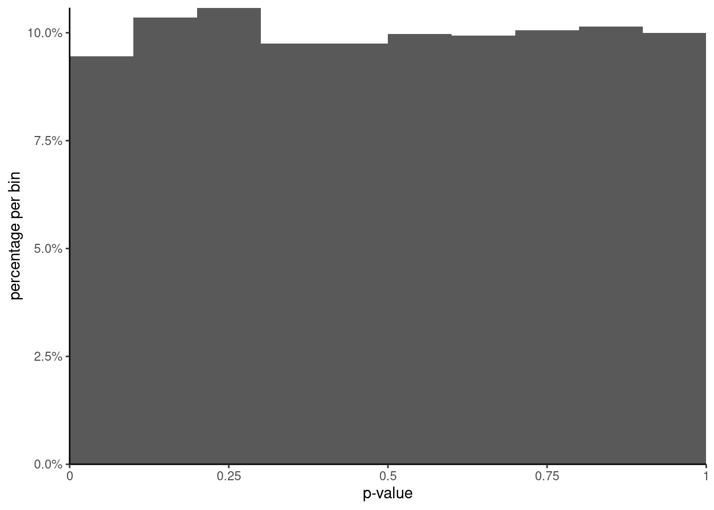

library(dplyr)library(ggplot2)data(arithmetic, package ="hecedsm")## #Fit one way analysis of variancemodel <-aov(data = arithmetic,formula = score ~ group)anova(model) #print anova table
Analysis of Variance Table
Response: score
Df Sum Sq Mean Sq F value Pr(>F)
group 4 723 180.7 15.3 0.00000012 ***
Residuals 40 473 11.8
---
Signif. codes: 0 '***' 0.001 '**' 0.01 '*' 0.05 '.' 0.1 ' ' 1
# Compute p-value by handpf(15.27,df1 =4,df2 =40,lower.tail =FALSE)
[1] 0.000000116
# How reliable is this F benchmark? To see this, we generate data from a normal# distribution with the same mean and variance as the original datamu <-mean(arithmetic$score)sigma <-sd(arithmetic$score)B <-10000L # Number of replicationsset.seed(1234) # fix the dice to get reproducible resultspval <- test <-numeric(B) # container to store resultsfor(b in1:B){# Generate fake results (assuming common average) from normal distribution fakescore <-rnorm(n =45, mean = mu, sd = sigma)# For each fake dataset, compute ANOVA F-test statistic and p-value out <-anova(aov(fakescore ~ arithmetic$group)) test[b] <- broom::tidy(out)$statistic[1] pval[b] <- broom::tidy(out)$p.value[1]}
# Look at what happens under the null# Histogram (suitably rescaled) matches F(4, 40) benchmark null distributionggplot(data =data.frame(test),mapping =aes(x = test)) +geom_histogram(mapping =aes(y =after_stat(density)),bins =100L,boundary =0) +stat_function(fun = df, args =list(df1 =4, df2 =40)) +theme_bw()

Figure 1: Histogram of bootstrap null distribution against \(F(4, 40)\) large-sample approximation.
# When there are no difference in mean and the variance are equal# i.e., when all assumptions are met, then p-values should be uniformly# distributed, meaning any number between [0,1] is equally likelyggplot(data =data.frame(pval),mapping =aes(x = pval, y =after_stat(count /sum(count)))) +geom_histogram(breaks =seq(0, 1, by =0.1)) +scale_y_continuous(labels = scales::percent, limits =c(0, NA), expand =expansion()) +scale_x_continuous(breaks =seq(0, 1, by =0.25),labels =c("0","0.25","0.5","0.75","1"),limits =c(0, 1), expand =expansion()) +labs(y ="percentage per bin", x ="p-value") +theme_classic()

Figure 2: Histogram of \(p\)-values from the \(F\) test.
# Two-sample t-test (equal variance) and one-way ANOVA# are equivalent for comparison of two groupsdata("BJF14_S1", package ="hecedsm")anova(model)
Analysis of Variance Table
Response: score
Df Sum Sq Mean Sq F value Pr(>F)
group 4 723 180.7 15.3 0.00000012 ***
Residuals 40 473 11.8
---
Signif. codes: 0 '***' 0.001 '**' 0.01 '*' 0.05 '.' 0.1 ' ' 1
t.test(pain ~ condition, data = BJF14_S1, var.equal =TRUE)
Two Sample t-test
data: pain by condition
t = -10, df = 52, p-value = 0.00000000000003
alternative hypothesis: true difference in means between group Control and group Pain is not equal to 0
95 percent confidence interval:
-5.26 -3.56
sample estimates:
mean in group Control mean in group Pain
1.67 6.07
## Tests for equality of variance are simply analysis of variance## models with different datacar::leveneTest(model, center = median)
Levene's Test for Homogeneity of Variance (center = median)
Df F value Pr(>F)
group 4 1.21 0.32
40
# Brown-Forsythe by default, which centers by median# replace 'center=median' by 'center=mean' to get Levene's testmeds <- arithmetic |>group_by(group) |>summarize(med =median(score)) # replace by mean to get the result for leveneTest# Compute absolute difference between response and group medianarithmetic$std <-abs(arithmetic$score -rep(meds$med, each =9))# Compute F-test statistic for analysis of variance with the 'new data'anova(aov(std ~ group, data = arithmetic))
Analysis of Variance Table
Response: std
Df Sum Sq Mean Sq F value Pr(>F)
group 4 19.4 4.86 1.21 0.32
Residuals 40 160.9 4.02
# Parametrization of the linear models (see course notes)# Here, each group has the same subsample size (balanced)# So calculations are more intuitive...data(arithmetic, package ="hecedsm")# If you fit a one-way ANOVA in R with a linear model via 'lm'# The default parametrization is such that the intercept corresponds# to the mean of the first level (alphanumerical order) of the factor# and other coefficients are difference to that grouparithmetic |> dplyr::group_by(group) |> dplyr::summarize(meanscore =mean(score)) |> knitr::kable(digits =3, col.names =c("group", "mean score"))
Table 1: Average score on arithmetic test per experimental group.
group
mean score
control 1
19.7
control 2
18.3
praise
27.4
reprove
23.4
ignore
16.1
anova1 <-lm(score ~ group, data = arithmetic)coef(anova1)
# Here, control 1 is baseline (omitted).# the difference between intercept and control1 is zero, so no coef. reported# If we change the 'contrast' argument, we can get the "DEFAULT" parametrization# of analysis of variance models: sum-to-zero.# In that case, the intercept is the global mean and the sum of# differences to the mean is zeroanova2 <-lm(score ~ group,contrasts =list(group ="contr.sum"),data = arithmetic)# Global meanas.numeric(coef(anova2)["(Intercept)"])
[1] 21
mean(arithmetic$score)
[1] 21
# Get mean for omitted group (ignore)# since the sum of differences to the mean is zero# If we add this coefficient to the global mean, we retrieve the# subgroup average of 'ignore'coef(anova2)["(Intercept)"] -sum(coef(anova2)[-1])
(Intercept)
16.1
Source Code
---title: "MATH 80667A - Week 3"author: "Léo Belzile"format: htmleval: trueecho: truemessage: falsewarning: falsecode-tools: source: true toggle: false caption: "Download Quarto file"---```{r}#| echo: falseoptions(scipen =100, digits =3)``````{r}library(dplyr)library(ggplot2)data(arithmetic, package ="hecedsm")## #Fit one way analysis of variancemodel <-aov(data = arithmetic,formula = score ~ group)anova(model) #print anova table# Compute p-value by handpf(15.27,df1 =4,df2 =40,lower.tail =FALSE)``````{r}#| label: bootstrap-sim#| cache: true# How reliable is this F benchmark? To see this, we generate data from a normal# distribution with the same mean and variance as the original datamu <-mean(arithmetic$score)sigma <-sd(arithmetic$score)B <-10000L # Number of replicationsset.seed(1234) # fix the dice to get reproducible resultspval <- test <-numeric(B) # container to store resultsfor(b in1:B){# Generate fake results (assuming common average) from normal distribution fakescore <-rnorm(n =45, mean = mu, sd = sigma)# For each fake dataset, compute ANOVA F-test statistic and p-value out <-anova(aov(fakescore ~ arithmetic$group)) test[b] <- broom::tidy(out)$statistic[1] pval[b] <- broom::tidy(out)$p.value[1]}``````{r}#| label: fig-histogram-benchmark#| fig-cap: "Histogram of bootstrap null distribution against $F(4, 40)$ large-sample approximation."# Look at what happens under the null# Histogram (suitably rescaled) matches F(4, 40) benchmark null distributionggplot(data =data.frame(test),mapping =aes(x = test)) +geom_histogram(mapping =aes(y =after_stat(density)),bins =100L,boundary =0) +stat_function(fun = df, args =list(df1 =4, df2 =40)) +theme_bw()``````{r}#| label: fig-histogram-pvalues#| fig-cap: "Histogram of $p$-values from the $F$ test."# When there are no difference in mean and the variance are equal# i.e., when all assumptions are met, then p-values should be uniformly# distributed, meaning any number between [0,1] is equally likelyggplot(data =data.frame(pval),mapping =aes(x = pval, y =after_stat(count /sum(count)))) +geom_histogram(breaks =seq(0, 1, by =0.1)) +scale_y_continuous(labels = scales::percent, limits =c(0, NA), expand =expansion()) +scale_x_continuous(breaks =seq(0, 1, by =0.25),labels =c("0","0.25","0.5","0.75","1"),limits =c(0, 1), expand =expansion()) +labs(y ="percentage per bin", x ="p-value") +theme_classic()``````{r}# Two-sample t-test (equal variance) and one-way ANOVA# are equivalent for comparison of two groupsdata("BJF14_S1", package ="hecedsm")anova(model)t.test(pain ~ condition, data = BJF14_S1, var.equal =TRUE)## Tests for equality of variance are simply analysis of variance## models with different datacar::leveneTest(model, center = median)# Brown-Forsythe by default, which centers by median# replace 'center=median' by 'center=mean' to get Levene's testmeds <- arithmetic |>group_by(group) |>summarize(med =median(score)) # replace by mean to get the result for leveneTest# Compute absolute difference between response and group medianarithmetic$std <-abs(arithmetic$score -rep(meds$med, each =9))# Compute F-test statistic for analysis of variance with the 'new data'anova(aov(std ~ group, data = arithmetic))``````{r}#| label: tbl-groupmeans#| tbl-cap: "Average score on arithmetic test per experimental group."# Parametrization of the linear models (see course notes)# Here, each group has the same subsample size (balanced)# So calculations are more intuitive...data(arithmetic, package ="hecedsm")# If you fit a one-way ANOVA in R with a linear model via 'lm'# The default parametrization is such that the intercept corresponds# to the mean of the first level (alphanumerical order) of the factor# and other coefficients are difference to that grouparithmetic |> dplyr::group_by(group) |> dplyr::summarize(meanscore =mean(score)) |> knitr::kable(digits =3, col.names =c("group", "mean score"))``````{r}anova1 <-lm(score ~ group, data = arithmetic)coef(anova1)# Here, control 1 is baseline (omitted).# the difference between intercept and control1 is zero, so no coef. reported# If we change the 'contrast' argument, we can get the "DEFAULT" parametrization# of analysis of variance models: sum-to-zero.# In that case, the intercept is the global mean and the sum of# differences to the mean is zeroanova2 <-lm(score ~ group,contrasts =list(group ="contr.sum"),data = arithmetic)# Global meanas.numeric(coef(anova2)["(Intercept)"])mean(arithmetic$score)# Get mean for omitted group (ignore)# since the sum of differences to the mean is zero# If we add this coefficient to the global mean, we retrieve the# subgroup average of 'ignore'coef(anova2)["(Intercept)"] -sum(coef(anova2)[-1])```